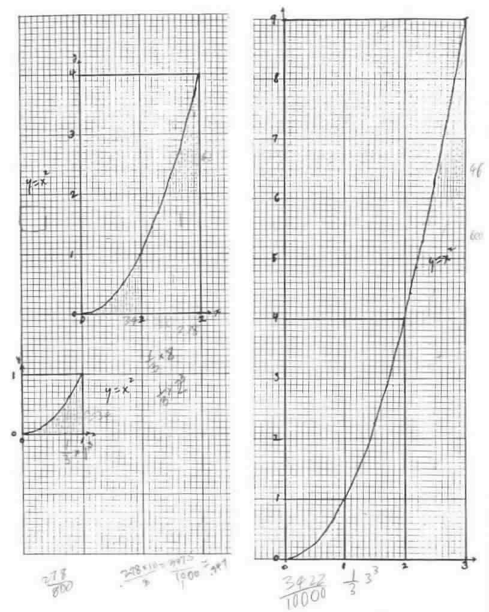
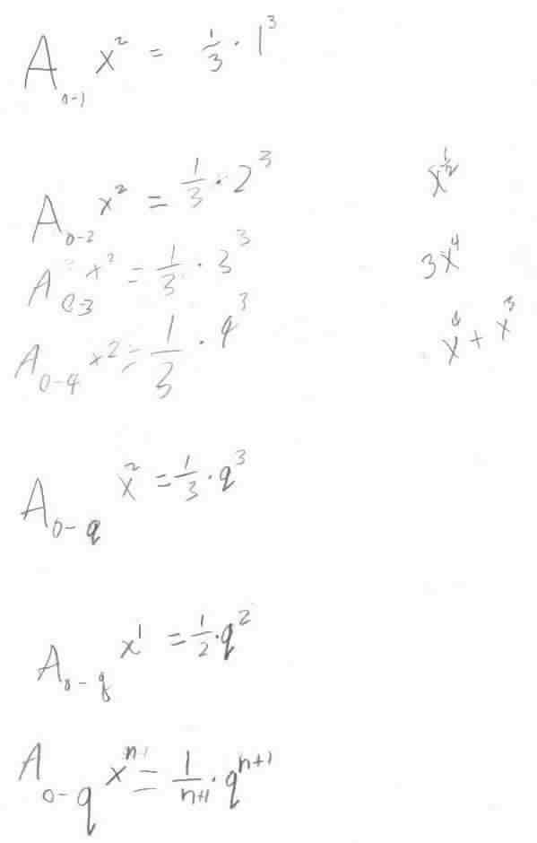
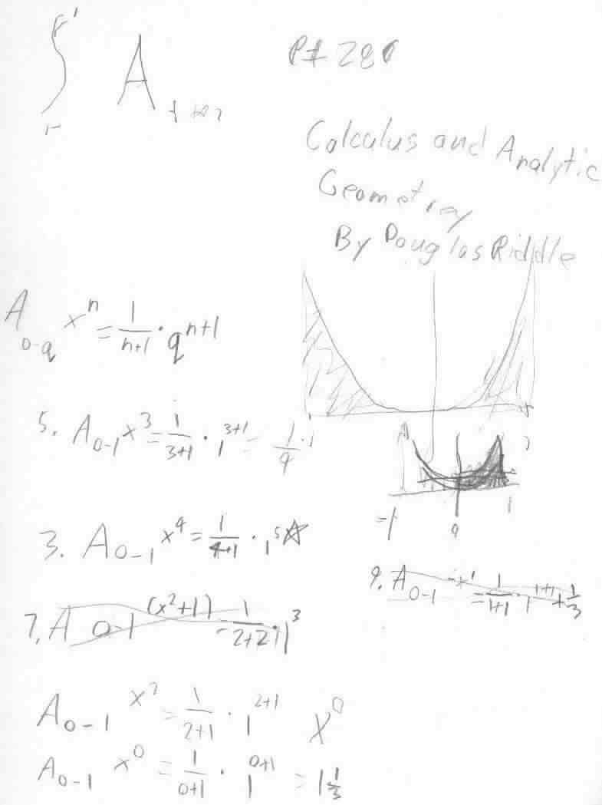

Geoffrey, a 5th grader, does integral
problems in one of those thick, heavy, expensive, Calculus books
Geoffrey is writing up what
he did in words; he says this is harder than the math! But you can see what he
did below, which was great!



To
Geoffrey's work on powers of powers
To
Geoffrey's work on infinite series
To
Geoffrey's work on the Fibonacci numbers
To
Geoffrey's work on graphs
To
Geoffrey's work on the 6 trig functions
To
other discoveries
To order
Don's materials
Mathman home